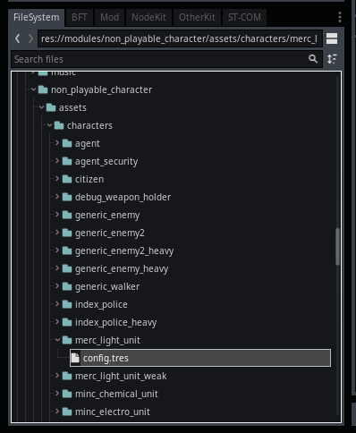

Module: non_playable_character
Documentation last edited: October 23, 2025 at 14:33 UTC
Description
So let's talk about this horrible piece of shit module. Yes, those are Non-Playable Characters (NPCs). Seems to be alright. However, even though this module was initially designed as a universal platform for all kinds of NPCs, not only human characters, it ended up being a module solely for human characters! You wouldn't be working with
NonPlayableCharacter
that much, you'll be working with
NPCHuman
all the time. It would've been nicer to call this module
"human_characters"
or
"human_NPC"
or
"NPC_human"
. Either way, does it matter? You can just realize that this module is all about humans.
Script Structure
.
├── autoload
│ ├── NPC_attack_queue.gd
│ ├── NPC_max_distance_manager.gd
│ ├── NPC_names.gd
│ ├── NPC_position_queue.gd
│ ├── NPC_spawn_queue.gd
│ └── NPC_vision_queue.gd
├── base_script.gd
├── base_scripts
│ ├── assets
│ │ └── sounds
│ │ ├── beeping.mp3
│ │ ├── beeping.mp3.import
│ │ ├── electrowave_attack.mp3
│ │ ├── electrowave_attack.mp3.import
│ │ ├── electrowave_imbound.mp3
│ │ └── electrowave_imbound.mp3.import
│ ├── minc_chemical_unit.gd
│ ├── minc_electro_unit.gd
│ ├── minc_explosives_unit.gd
│ └── minc_heavy_unit_weak.gd
├── configs
│ ├── character_data.gd
│ ├── hitbox_damage_multiplier.gd
│ ├── hitbox_data.gd
│ └── weapon_config.gd
├── debug
│ └── logic_state_label.gd
├── logic.gd
├── nodes
│ ├── dead_body_search.gd
│ ├── dropped_weapon.gd
│ ├── NPC_spawn.gd
│ └── patrol_point_hint.gd
├── non_playable_character.gd
├── pathfinding.gd
├── state_base.gd
├── states
│ ├── citizen
│ │ ├── act_playing.gd
│ │ ├── attack_player.gd
│ │ ├── none.gd
│ │ ├── panic_anim.gd
│ │ ├── panic.gd
│ │ └── patrol.gd
│ ├── heavy_unit
│ │ ├── attack.gd
│ │ ├── attack_player.gd
│ │ ├── follow_player.gd
│ │ ├── none.gd
│ │ ├── patrol.gd
│ │ ├── stand_and_shoot.gd
│ │ ├── stand_and_shoot_player.gd
│ │ ├── test_look.gd
│ │ └── wait_enemy.gd
│ └── light_unit
│ ├── attack.gd
│ ├── attack_player.gd
│ ├── follow_player.gd
│ ├── none.gd
│ ├── patrol.gd
│ ├── stand_and_shoot.gd
│ ├── stand_and_shoot_player.gd
│ ├── test_look.gd
│ └── wait_enemy.gd
└── types
├── human
│ ├── base_script_human.gd
│ ├── human_weapon_handler.gd
│ └── state_base_human.gd
└── human.gd
Core scripts
"./"
"non_playable_character.gd"
is a
NonPlayableCharacter
base class for all NPCs. NPCs in question are humans, of course. It contains all the basic functionality needed to make an NPC, which is extended by
NPCHuman
.
"state_base.gd"
is a
NPCLogicState
base class for logic states of NPCs. Each logic state contains unique logic to execute in Finite-State Machine of this NPC.
"pathfinding.gd"
is a
NPCPathfinding
pathfinding class, it is using navigation mesh to navigate the NPC in locations.
"base_script.gd"
is a
NPCBaseScript
NPC base script class that can be used for "base scripts" which can extend logic of certain NPCs. Usually used by
"heavy units"
to make the "fall down on the floor after too much damage" logic.
"logic.gd"
is a
NPCLogic
class that is handling the logic states and visibility detection of other characters. This class is practically being a Finite-State Machine.
Autoloads
"./autoloads/"
NPCAttackQueue
- a queue to optimize NPC attacks to prevent too many attacks in the same frame.
NPCMaxDistanceManager
- a manager of NPCs that were temporarily removed from the scene tree (due to distance) for optimization.
NPCNames
- a singleton that generates names for NPCs.
NPCPositionQueue
-
Obsolete
Incomplete implementation for the cover system of NPCs.
NPCSpawnQueue
- a queue to make an order of NPC spawns so they would be spawning one-by-one for correct support of properties like
named_npc_alive_limit
of
NPCSpawn
.
NPCVisionQueue
- a queue to optimize visibility checks of NPCs, only one NPC per frame does a visibility check to prevent too many checks done in one frame.
Configs
"./configs"
NPCHitboxData
- a config that contains an array of
NPCHitboxDamageMultiplier
which define damage multipliers of each hitbox bone (aka head can get 2x more damage than other bones and etc).
NPCWeaponConfig
- a config for an NPC weapon, for the time being only supported for firearms.
NPCHitboxDamageMultiplier
- a config that contains a bone name and a multiplier by which the damage will be multiplied.
NPCCharacterData
- a character data config that contains a variety of settings like faction name, health/armor, human model name, assigned weapons, experience for a kill, etc.
Nodes " ./nodes"
"dead_body_search.gd"
- a code that can be runned when you have
"Ammo Pickup"
perk (
"loot_corpses"
perk boolean), it is allowing the player to loot ammo from dead bodies by interacting with them.
"dropped_weapon.gd"
- a dropped weapon code, weapons of NPCs are
HumanModel
weapons that were duplicated and turned into rigidbodies. This code allows to add logic to those rigidbodies to make it possible to pickup the weapon. Keep in mind, this is separate from player dropped weapons or dropped weapons that were pre-placed on any location.
"NPC_spawn.gd"
- a
NPCSpawn
node that gives you a possibility to spawn an NPC, provides a huge amount of settings to configure. It is initializing an NPC once and then reuses its instance. You can only spawn one simultaneously alive NPC with this node.
"patrol_point_hint.gd"
- a patrol point hint node that allows the user to set an NPC's patrol position that can be randomly chosen in a patrol state.
Base Scripts
"./base_scripts"
Base scripts are extending the functionality of NPCs by making it possible to run additional logic on top of the NPC's code without overriding the existing code. All base scripts are stored at
"res://modules/non_playable_character/src/base_scripts/"
. You can assign a base logic script in
NPCCharacterData
.
Template
extends NPCBaseScript
# Initialization, can be overriden
func initialize():
pass
# Update, called each physics frame
func update(delta: float):
pass
Logic States
"./states"
Each folder in
"res://modules/non_playable_character/src/states/"
creates a logic set that can be defined in
NPCCharacterData
. And each logic set is a set of logic states that define the NPC's behavior. NPC's logic works by the principle of Finite-State Machine.
Template
class_name _LogicSet_NameHere
# ^^^
# It is important to have a class name defined for a logic state due to additional performance.
# It isn't necessary for functionality, but, for some reason, a class name optimizes the work
# of logic states.
extends NPCLogicStateHuman
# Runs when NPCLogic switches on this state
func on_switch() ->
void:
pass
# An update that happens during _physics-process
func update(delta: float) ->
void:
pass
Types
"./types"
Remember I said it was supposed to be a universal platform for NPCs? So yeah,
NPCHuman
have captured this entire module and now
"human.gd"
is the heart of this module. It is defining the human NPCs, that are being the only working type here. It may be possible to make different types still, but it would require quite a rewrite. Deep in that NPC system, there's still a support for types so yeah there's that folder too.
Creation of NPCs

0. Create a new folder for your character at
"res://modules/non_playable_character/assets/characters/"
, your new folder's name is going to be a name for NPC character class.
1. Create
"config.tres"
as
NPCCharacterData
2. Define the settings
If you want to make a new model for NPC instead of using an existing one, please, take a look at
"human_model"
or
"character_builder"
module docs.
General Information
Root directories list
assets, docs, src
Nodes
NPCAttackQueue
NPCMaxDistanceManager
NPCNames
NPCPositionQueue
NPCSpawnQueue
NPCVisionQueue
logic_state_label
dropped_weapon
NPCSpawn
NPCPatrolPointHint
NonPlayableCharacter
Classes
NPCBaseScript
minc_chemical_unit
minc_electro_unit
minc_explosives_unit
minc_heavy_unit_weak
NPCLogic
dead_body_search
NPCPathfinding
_Citizen_ActPlaying
_Citizen_AttackPlayer
_Citizen_None
_Citizen_Panic
_Citizen_PanicAnim
_Citizen_Patrol
_HeavyUnit_Attack
_HeavyUnit_AttackPlayer
_HeavyUnit_FollowAttack
_HeavyUnit_None
_HeavyUnit_Patrol
_HeavyUnit_StandAndShoot
_HeavyUnit_StandAndShootPlayer
_HeavyUnit_TestLook
_HeavyUnit_WaitEnemy
_LightUnit_Attack
_LightUnit_AttackPlayer
_LightUnit_FollowAttack
_LightUnit_None
_LightUnit_Patrol
_LightUnit_StandAndShoot
_LightUnit_StandAndShootPlayer
_LightUnit_TestLook
_LightUnit_WaitEnemy
NPCLogicState
NPCBaseScriptHuman
NPCHumanWeaponHandler
NPCLogicStateHuman
NPCHuman
Resources
NPCCharacterData
NPCHitboxDamageMultiplier
NPCHitboxData
NPCWeaponConfig
Other Scripts
None